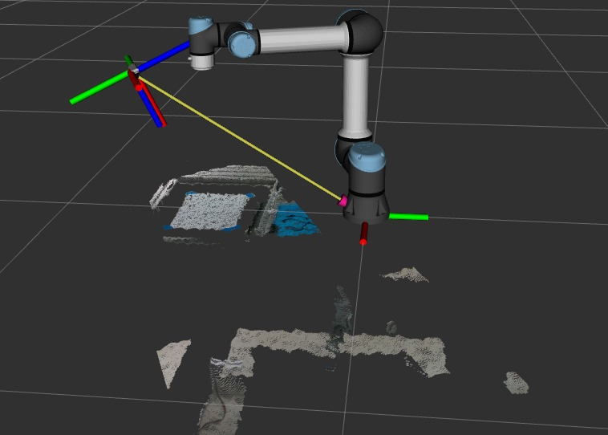
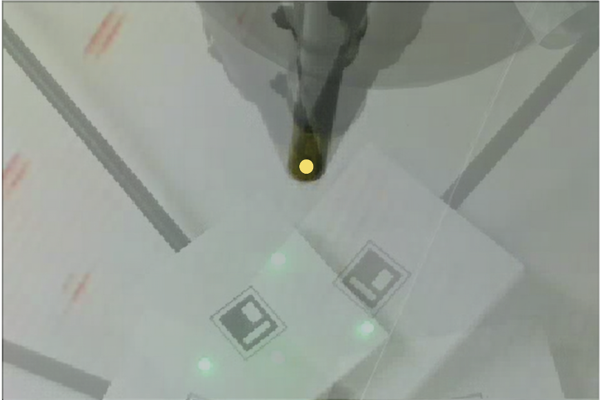
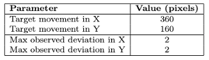
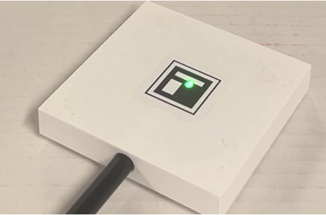
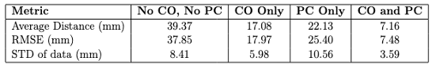

Autonomous Surgical Tool Tracking Robot with RCM
Johns Hopkins University
This project aims to develop an automated tool tracking system for laparoscopic surgery that ensures optimal visibility and hands-free instrument movement. The system monitors surgical tools in real-time and adjusts the camera position accordingly. Additionally, camera movement is limited by a robotic center of motion (RCM) to enhance safety and precision during procedures.
- Cameras Localizes target tool tip using ArUco tag
- Camera calibration brings camera into robot base frame
- Robot moves with RCM constraint utilizing Reflexxes library for motion planning
- Camera segments laser mark mimicing light source in 2d projection plane utilizing OpenCV and finds corresponding 3d point cloud
- Compensation error and proportional error offset brings robot closer to target

Overlay of robot tip of different configuration in camera view with the dot showing the RCM center

RCM error is limited to 2 pixel

Robot providing lighting at the correct positoin
